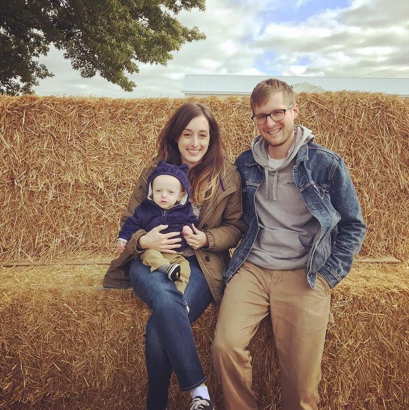

About Me

Brett is a graduate of Columbus College of Art & Design and a jack-off-most-trades at Cleveland Menu Printing "CMP". He started out as a graphic designer and has had multiple other rolls within CMP. Brett is now currently taking a six month bootcamp to prepare for the position of IT Director.
When Brett isn't working he enjoys spending time with his wife Alisha and son Elliott. Some of his interests include: camping, kayaking, skateboarding, fishing, backpacking,... anything to do with being outdoors.